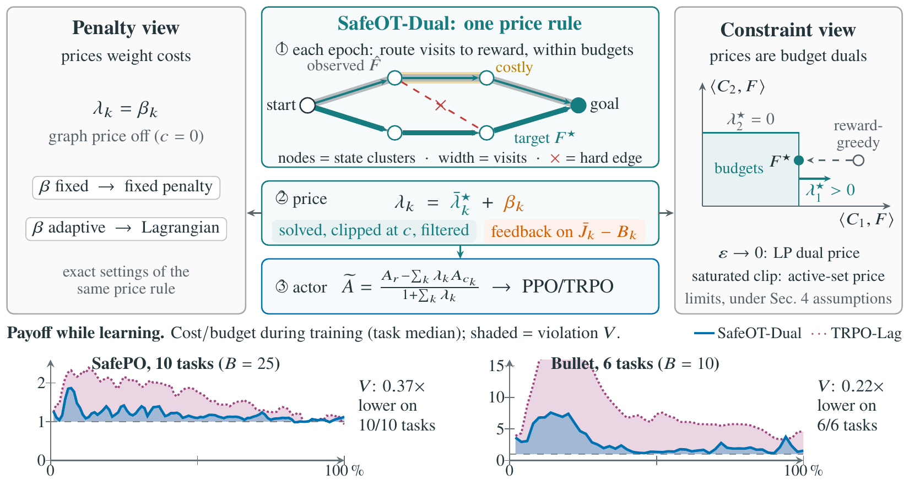
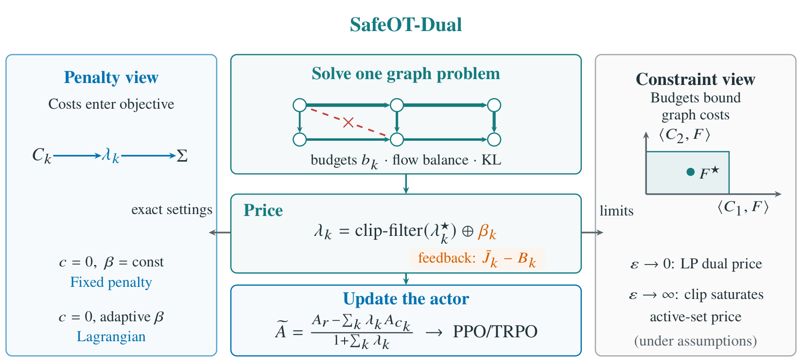
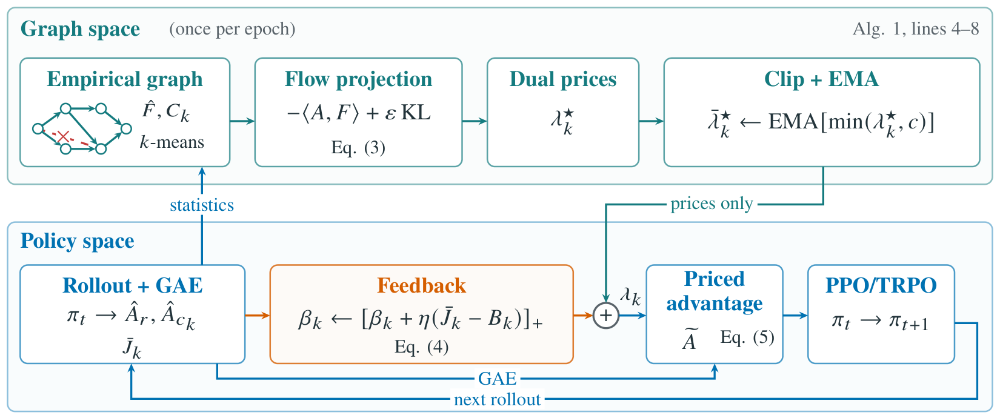
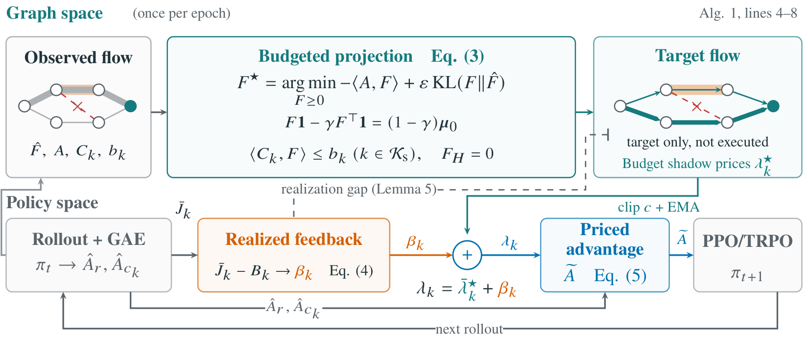

Figure 1 · teaser
一条价格规则，统一两种视角
导师原文：图 1 要表达什么
SafeOT-Dual 在 rollout 图上解一个有预算的访问流问题，用它的对偶价格定安全价格，再用实际成本反馈修正。罚函数和拉格朗日方法是这条规则的特例，LP 价格和 active-set 价格是它有条件的极限；训练中的违规也更少。
我们要的 teaser 和方法图：每张主图应传达什么、V16 与目标的差距，以及后续每轮 A/B 怎样接近目标。沿用导师中文方案；目标草图供表达意图，排版与数据标注以各轮交付说明为准。
SafeOT-Dual 在 rollout 图上解一个有预算的访问流问题，用它的对偶价格定安全价格，再用实际成本反馈修正。罚函数和拉格朗日方法是这条规则的特例，LP 价格和 active-set 价格是它有条件的极限；训练中的违规也更少。
rollout 构成一张流图；带预算的熵正则投影把访问量往高回报方向重新分配，并给出每个预算的价格。只有这些价格加上成本反馈进入标准的 PPO/TRPO 更新；策略从不执行 F*，两者之间的差距由反馈修正。
07:10Z 意图示例，使用真实曲线；保留原稿供对照

与目标草图等宽展示，图片比例不变

三张图始终等宽、按原比例显示；点击图片可看原图。手机端纵向排列。已有轮次持续保留，后续每轮 A/B 在发布时追加到这里。
观察它与目标叙事的差距

已交独立冷读，未填入新的评分

以下是导师报告的 V16 冷读结果；不是 V17 评分。目标为每张主图的信息、层次和顶会水准各项 ≥4/5，同时满足可读性要求。V17 的独立冷读验收仍待完成。
| 图 | V16 冷读得分（满分 5） | 导师记录的问题 | 验收目标 |
|---|---|---|---|
| Figure 1 · teaser | 信息 2/5 · 美观 3/5 · 可读 4/5 · 顶会 2/5 | F* 在预算框内部；图未标注；缺少问题和结果 | 各项 ≥4/5 |
| Figure 2 · 方法 | 流程 3/5 · 层次 2/5 · 可读 4/5 · 顶会 2/5 | 新旧模块不分；强调色位置不当；未写约束 | 各项 ≥4/5 |
| Figure 3 · 结果 | 可读 2/5 · 诚实 3/5 · 顶会 3/5 | 更好方向相反；计数主体不清；颜色含义冲突 | 各项 ≥4/5 |
每一轮由新的评审只看 PNG，并与预期信息对照；制作方的内部检查不代替独立冷读评分。
teaser A/B、方法图、结果图。
已发布；独立冷读待验收。
按冷读意见改进；图 5(a) 使用 A3 逐格数据。
计划轮次，尚无此轮图稿。
细节打磨；图 4 纳入实现差距 v2/v3 数据。
计划轮次。
最后一次结构调整；图 5(b,c) 按已到位结论填入。
20Z 后只修缺陷；09-26 06Z 冻结。
时间表沿用导师方案；正文修订号与合入由 owner 管理。
{kind=link}
{kind=link}